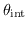
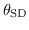

Next: Reducing 12-mm ATCA observations Up: Combining Mosaics and Single Previous: The Non-Linear Method -
These alternative methods are not implemented as tasks within Miriad, so the steps to implement them are more hands-on. For example, if needed, you will want to correct the flux calibration factor manually before using either of these (e.g. immerge can do this for you). Some examples of using these approaches are given in the paper by Snezana Stanimirovic (ASP Conf. Series, vol. 278, p. 375).
Before adding the mosaic and single-dish images, you should apply the residual primary beam attenuation present in the mosaic to the single-dish data. Task mossen will generate an image of the residual primary beam attenuation (set the gain parameter). Having generated a the residual primary beam attenuation, you can then apply this to the single-dish image using maths.
The weights used to add the mosaic and single-dish images should sum to 1, but the actual way of determining the relative weights is not well defined. One good choice, advocated by Stanimirovic et al., is to weight the images in inverse proportional to the beam volumes. When the difference in resolution between the mosaic and single-dish observations is appreciable (i.e. the normal situation), this weighting reduces to nearly the same as that performed by immerge. Normalisation the weights to add to 1 gives
To generate the effective beam dataset, you will also want to add
a component to the mosaic beam. Because of the process that
mosmem
believes was used to generate a mosaic, the
component you add is not simply the single-dish beam - the mosaicing process
narrows down the width of the beams from that of individual
pointings. If both the interferometer primary beam and the single-dish beam
are gaussian forms with widths
 and

respectively, then you will want to add a gaussian to the mosaic beam
dataset which has a width
Note that this technique ignores some edge effects. Also it uses the theoretical noise level derived for the mosaic observation. This will be close to what you want if the noise levels for all pointings are about the same.